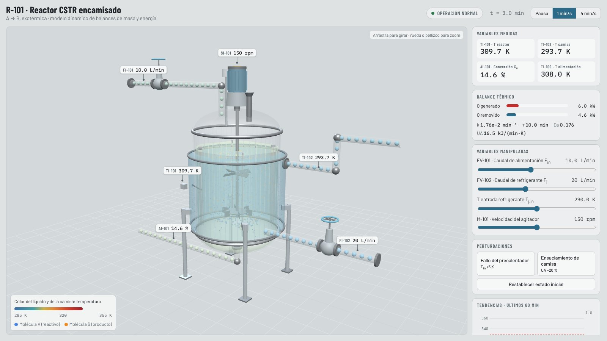
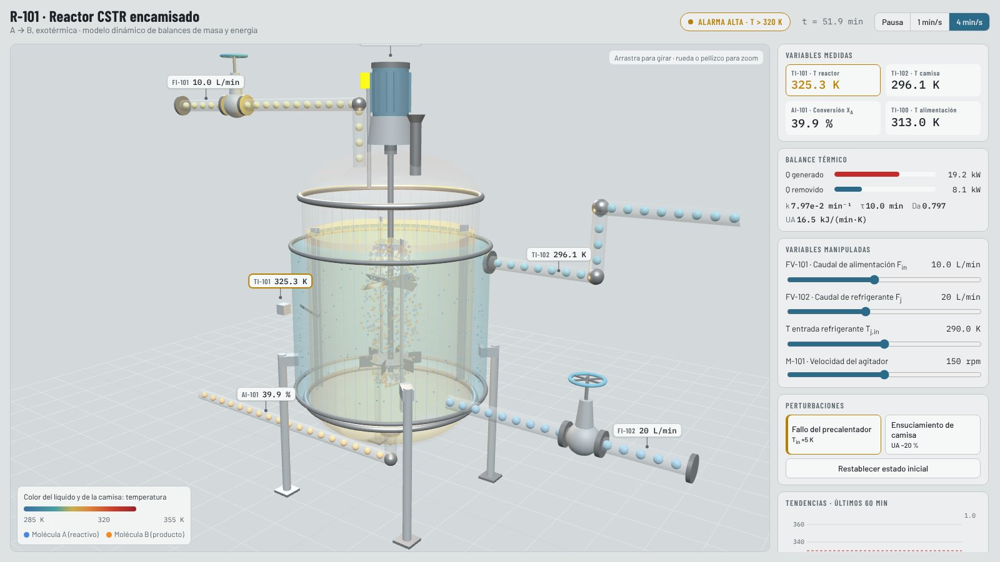

Química · control de procesosChemical · process control
Reactor CSTR R-101 · HMI de entrenamientoCSTR reactor R-101 · operator training HMI
Reactor encamisado con reacción exotérmica A → B. Balances de masa y energía integrados con RK4, ruido de medición y alarmas. Una HMI en Dash al estilo ISA-101 envía el estado a la vista 3D en cada paso; la página 3D también funciona sola.Jacketed reactor with an exothermic A → B reaction. Mass and energy balances integrated with RK4, measurement noise and alarms. A Dash HMI in ISA-101 style streams its state to the 3D view every tick; the 3D page also runs standalone.
310 Kestado estacionario basebase steady state
339 Kfuga térmica si nadie actúarunaway with no operator action
316 Krecuperado por el operadorrecovered by the operator
- El color del líquido sigue a T, las moléculas cambian de A a B según la conversión y la baliza se enciende sobre 320 K.
- Liquid colour follows T, molecules turn from A to B with conversion, and the beacon lights above 320 K.